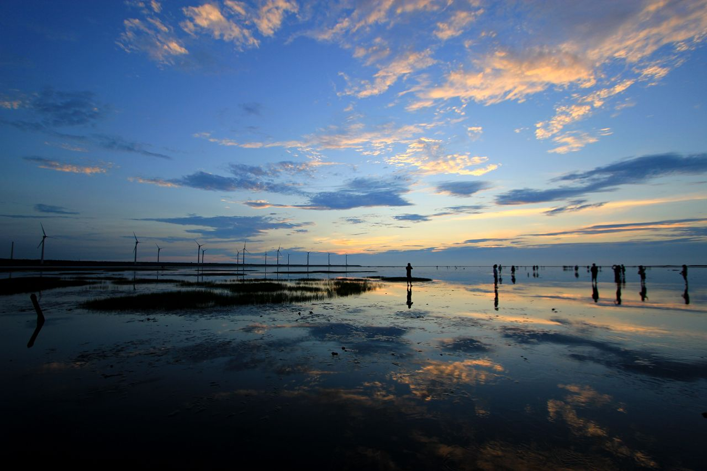

台中高美濕地
Taichung County Gaomei Wetlands Wildlife Refuge
地址：臺中市清水區大甲溪出海口高美濕地
高美濕地（高美野生動物保護區）的前身為高美海水浴場，從日治時期開始，海水浴場一直是遊客夏日的休閒勝地，隨著臺中港的啟用，高美海水浴場泥沙日漸淤積，導致遊客漸漸稀少，在不得已的情況下，只好宣告關閉，卻也因為泥沙的堆積，造就了今天生態豐富的高美濕地。
高美濕地雖然面積不大，但是由於泥質及沙質灘地兼具，加上與河口沼澤地帶鑲嵌在一起，所以孕育了豐富又複雜的濕地生態，以及目前所知全臺灣最大族群的雲林莞草區，形成乾濕相間伴有植物生長的複雜地形，因為地形多變，生態種類亦相當複雜，主要種類為鳥類、魚類、蟹類及其他無脊椎類等生物；每年秋冬之際，都會有大批的候鳥前往作客，不管是短暫的休息，或是駐足過冬，都為高美濕地增添了不同的生態風貌，更成為賞鳥人士的新據點。
更多介紹：